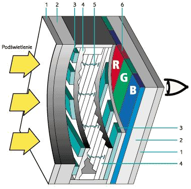
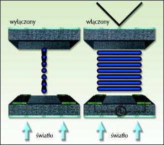
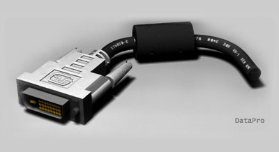
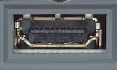
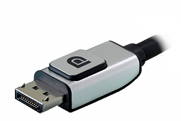

- CRT Monitors
- LCD Monitors
- Monitor Connections
- Additional Information
Monitor Construction
CRT stands for Cathode-Ray Tube, a vacuum tube containing one or more electron guns and a phosphorescent screen used to display images. In Polish, the term CRT is commonly used to refer to monitors with a cathode-ray tube display. The proper term is a cathode-ray tube monitor.
[1] Cathode-ray tube
[2] Electron guns with focusing systems
[3] Electron beams
[4] Deflection coil
[5] Phosphor
[6] Mask
[7] Anode
[2] Electron guns with focusing systems
[3] Electron beams
[4] Deflection coil
[5] Phosphor
[6] Mask
[7] Anode
Operating Principles
The principle of creating an image in a color CRT monitor involves sending three electron beams (one for each RGB color component) towards the front screen coated with a layer of phosphor. These beams are directed by a strong magnetic field (deflection coils) to hit the appropriate area on the phosphor.Phosphor is a luminescent pigment, a material that glows when exposed to radiation. The beams sweep the screen along a single horizontal line, called the scan line, from left to right, illuminating the phosphor points and causing them to glow brighter or dimmer, depending on the voltage controlling the electron gun.
Horizontal Frequency
The frequency at which the monitor draws a single line of the image, measured in kilohertz [kHz]
After drawing a line and reaching the right edge of the screen, the beams are temporarily turned off, then the deflection coils direct them to the beginning of the next line down the screen, and the process starts again until the entire screen is filled line by line. When the entire screen is filled, the beams are turned off again, and the whole cycle of drawing the image starts from the top of the screen (from the first line).
Refresh Rate (Vertical)
The frequency at which the monitor draws the entire screen (all lines of the image) - measured in hertz [Hz]. To avoid screen flicker and eye strain, the image should be drawn 85 times per second (refresh rate of 85 Hz)
Mask Types in CRT Monitors
In front of the phosphor layer is the so-called mask (shadow mask), which acts as a filter ensuring that electrons hit the designated phosphor areas (subpixels) perfectly, positively affecting image quality.Perforated (IBM Delta)

Slot (Trinitron, Diamondtron)
Slot-Perforated (NEC Cromaclear)
Perforated Mask
Used in the first CRT monitors, developed by IBM. Its biggest drawback is its large surface area, which reduces image brightness
Slot Mask
First used in NEC Cromaclear CRTs. It is a compromise between the two previous solutions - at the cost of slight image quality loss, the two stabilizing wires were eliminated. The production cost of this mask is also much lower
Slot-Perforated Mask
The frequency at which the monitor draws a single line of the image, measured in kilohertz [kHz]
Pros and Cons of CRT Monitors
The choice of monitor type depends mainly on its intended use. CRT monitors have been almost entirely replaced by LCD monitors, but some unique properties still make them popular among photographers, for example.
Advantages of CRT Monitors
Fast response time, multi-frequency (ability to change resolution), accurate color reproduction, wide viewing angles.
Disadvantages of CRT Monitors
Average brightness and contrast, large size and weight (making adjustment more difficult), high power consumption, always present screen curvature, refresh rate significantly affects image quality and eye strain, higher electromagnetic radiation emission.
Parameter Selection for CRT Monitors
In CRT monitors, the actual working screen area is slightly smaller than the manufacturer claims due to the screen curvature that always occurs in a cathode-ray tube monitor. Even in the latest models with almost flat screens (FST - Flat Square Tube), there are slight horizontal curvatures.
Useful Screen Size
The diagonal size of the monitor screen (expressed in inches)
Currently, standard resolutions in CRT monitors are, for example, 1024×768 (XVGA), 1280×1024 (SXGA), and 1600×1200 (UXGA). Due to the ability to display multiple resolutions (multi-frequency), it is only important that the monitor provides an appropriate vertical refresh rate for high resolution.
Resolution
A parameter that defines the number of pixels in the image displayed on the screen in the current operating mode of the computer monitor; resolution is expressed as the number of image pixels horizontally and vertically
In a CRT monitor, the physical pixel on the screen surface does not directly correspond to the "computer" pixel understood as the smallest element of the image processed by the graphics card. Most often, when working with a CRT monitor, a single computer image pixel generated by the graphics card corresponds to several physical pixels of the mask.
Therefore, to semantically distinguish the concept of a computer image pixel from a real CRT pixel, the term dot pitch was introduced. The smaller the dot pitch, the more densely packed the elements are, resulting in better image sharpness. Common dot pitch sizes: 0.2mm; 0.24mm; 0.25mm; 0.28mm.
Dot Pitch in CRT Monitors
The distance in [mm] between two pixels (triads) in a given CRT.
In CRT monitors, horizontal and vertical refresh rates are distinguished. The vertical refresh rate indicates how many times per second the entire screen is drawn. The horizontal refresh rate specifies how many times per second the electron beam can draw a horizontal line. The horizontal frequency has a very high value (expressed in kilohertz), so from a practical point of view, it has little significance.
Therefore, when talking about the refresh rate, we always mean the vertical frequency. A refresh rate below 80Hz will quickly tire the eyes (visible screen flicker), and it should ideally be 85-100Hz at a given resolution.
Refresh Rate in CRT Monitors
Specifies how many times per second the entire image (all lines) is displayed on the monitor screen; expressed in hertz [Hz].
Monitor Construction
LCD stands for Liquid Crystal Display - a device whose operating principle is based on changing the polarization of light due to changes in the orientation of liquid crystal molecules under the influence of an electric field.

[1] Polarizing filter
[2] Glass substrate
[3] Transparent electrodes
[4] Alignment layer
[5] Liquid crystals
[6] Color filters
[2] Glass substrate
[3] Transparent electrodes
[4] Alignment layer
[5] Liquid crystals
[6] Color filters
Operating Principles
The principle of creating an image in a color LCD monitor is somewhat different from CRT monitors. The electron gun was eliminated, resulting in a much smaller and lighter monitor. The light source is usually thin fluorescent lamps (or LEDs in much more expensive LED monitors). The light passes through a polarizing filter that allows light waves of a specific phase to pass through. The light beam then hits a filter with horizontal slits, passes through a polysilicon layer called liquid crystals, and hits a second filter with vertical slits.If the light beam is not bent by 90° by the liquid crystal layer, the light will be completely blocked by the second filter. However, if the light beam is bent by 90° by the liquid crystal molecules, the light will be transmitted to the screen. Liquid crystal molecules are controlled by transistors - applying voltage causes the particles to orient and bend the light beam by 90° (excitation). Each pixel in an LCD monitor consists of three (called a triad) subpixels corresponding to RGB colors. Each subpixel is controlled independently by a separate transistor.
Dead Pixel
A subpixel that does not change its color or does not excite - e.g., due to a transistor failure - no light beam bending
Matrix Types in LCD Monitors
Passive matrices were used in the early days of LCD technology - single transistors controlled entire rows and columns of pixels. Monitors based on passive matrices had slow response times, resulting in smearing and ghosting.In active matrices, each subpixel is controlled by a separate thin-film transistor (TFT).
Twisted Nematic Matrices

Applying voltage causes the liquid crystal molecules to rotate to a position perpendicular to the electrode planes on the opposite sides of the screen, blocking the light.
They have a short response time (below 8ms), but small viewing angles and poor color reproduction.
They have a short response time (below 8ms), but small viewing angles and poor color reproduction.
Multidomain / Patterned Vertical Alignment

MVA: Skewed (twisted) alignment of liquid crystal molecules was used, thanks to the use of polyamide solutions. Twisting allows for an identical image from wide viewing angles over 170°).
PVA: Technology developed by Samsung as an alternative to MVA (different manufacturing process and parameter values).
PVA: Technology developed by Samsung as an alternative to MVA (different manufacturing process and parameter values).
(Super) In-Plane Switching

In this matrix, the electrodes are placed only on the rear wall, and the liquid crystal molecules are not twisted. When voltage is applied, the light is guided along the shorter edges of the molecules, and the image is visible even at wide angles. In Super I-PS technology, broken electrodes arranged in zigzags were introduced, further reducing color distortions for large viewing angles.
Pros and Cons of LCD Monitors
The choice of monitor type depends mainly on its intended use. LCD monitors have almost entirely replaced CRT monitors, but this does not mean they are free of all flaws.
Advantages of LCD Monitors
Very good brightness/contrast, excellent image geometry, low power consumption, small size and weight (making adjustment easier), perfectly flat monitor, much lower electromagnetic radiation emission than CRT, refresh rate has little impact on image quality.
Disadvantages of LCD Monitors
Optimal image only at native resolution, average response time, worse color reproduction than CRT, image quality depends on viewing angle.
Parameter Selection for LCD Monitors
In LCD monitors, the diagonal screen size is exactly as the manufacturer claims, as liquid crystal panels have perfectly flat screens.
Useful Screen Size
The diagonal size of the monitor screen (expressed in inches)
LCD monitors have a native resolution - they display the optimal image only at one resolution, and other modes are achieved through mathematical scaling, which significantly degrades image quality.
Resolution
A parameter that defines the number of pixels in the image displayed on the screen in the current operating mode of the computer monitor; resolution is expressed as the number of image pixels horizontally and vertically
Pixel size directly depends on the size of the LCD screen and its native resolution. To calculate the pixel size, measure (or refer to the specifications) the width of the screen's working area and divide it by the horizontal resolution - e.g., a 19-inch monitor typically has a width of 376 mm, and its typical native horizontal resolution is 1280px. So: 376/1280 = 0.294 mm. Differences in pixel size for desktop LCD panels can reach up to 16.5%, but when considering notebook matrices, the differences can reach up to 36%, which is significant.
Consider a 17-inch LCD panel with a resolution of 1280x1024 and a monitor one step larger (i.e., 19 inches) with the same native resolution. The larger monitor will naturally have a much larger pixel.
Pixel Size in LCD Monitors
The distance in [mm] between two pixels in a given LCD matrix.
The brightness of the panel significantly affects the variety of displayed colors and the ability to present image details. An example value: 250 cd/m² (for comparison, the typical brightness of a CRT monitor is about 100-120 cd/m²). Of course, this is the maximum brightness; for example, during office work, too much brightness can quickly tire the eyes.
Some monitors have switchable modes that change brightness (and other parameters, such as color balance) so that the displayed content looks its best - for movies or games, a high-brightness profile is created, while for office work, a reduced brightness profile is used.
Image Brightness in LCD Monitors
The maximum brightness achievable in an LCD matrix, measured in cd/m² (number of candelas per square meter).
Let's talk about image contrast. An example value: 1000:1. Theoretically, the higher the contrast ratio, the better the panel's ability to present individual colors. It is worth noting that LCD panels have significant problems displaying black, which can sometimes appear more dark green than black. LCD monitor manufacturers often specify the so-called dynamic contrast in the device's specifications, which can reach up to 1000000:1, unlike the much lower static contrast. However, this is purely a marketing ploy.
Image Contrast in LCD Monitors
Defines the difference between the brightness of the brightest shade of white and the darkest shade of black achievable on the display.
The trick with dynamic contrast involves adjusting the brightness of the fluorescent lamps providing light depending on the image brightness. The difference in lamp brightness causes an artificial increase in the difference between the brightness of white and black colors. For displaying static images (e.g., slide presentations), dynamic contrast is not very suitable, as noticeable changes in background brightness will occur when changing slides. However, when displaying movies, changes in lamp brightness will not be as visible, and the film will appear more contrasty, although it will still look worse than on a device with higher static contrast. A monitor or TV with dynamic contrast enabled is not suitable for computer work, especially for document or graphics editing.
Analog Connector DSUB (VGA)
A popular connector during the CRT monitor era - undesirable in an LCD monitor, as it involves double signal conversion: converting the digital signal to analog in the graphics card and converting the analog signal to digital in the monitor. Double conversion causes image quality loss and increases susceptibility to interference. The name DSUB comes from the type of connectors resembling the shape of a lying letter D. Another name is VGA (from the graphics mode).
Digital Connector DVI (Digital Video Interface)
A digital standard for transmitting video signals, in DVI-I and DVI-A variants, it also allows for analog signal transmission. The cable connecting the monitor to the computer should not be longer than 5m.
DVI-D
True digital image transmitted between the digital output of the graphics card and the digital input of the monitor.
DVI-A
Used to connect a modern graphics card with a DVI output to a monitor with an analog input.
DVI-I
Provides the ability to transmit an analog signal from an analog source to an analog monitor as well as a digital signal from a digital source to a digital monitor.


The difference between Single Link and Dual Link inputs lies in the doubled power, speed, and quality of transmission for Dual Link inputs.
Modern Digital Connectors HDMI and Display Port
HDMI Connector (High Definition Multimedia Interface) is a digital standard for transmitting audio/video signals, enabling high-definition (HD) transmission and multi-channel audio. It is used in DVD players, Blu-Ray players, LCD and plasma TVs, and game consoles. Maximum cable length: 15m.


Display Port Connector - the main goal of the new standard is to connect a computer to a monitor or a computer to a home theater system (including projectors, TVs, etc.). DisplayPort, in its first version 1.0, achieved what HDMI managed to achieve only in version 1.3b: maximum resolution of 2560x1600, 24-bit color depth, maximum signal bandwidth of around 10 Gb/s. The full specification can be achieved with a 15-meter cable; for longer cables, the resolution is reduced to 1920x1080.


Future of Monitors and Displays?
Manufacturers are constantly competing to create new technologies that will provide even better image quality and lower production costs. Which technology will dominate the market in the near future? What innovative display construction methods do we know?
PDP (Plasma Display Panel)
In plasma displays, the properties of noble gases are used, which, when excited by high voltage, transition to a state called plasma. This reaction occurs simultaneously in several million pixels across the screen. Each pixel consists of three subpixels for primary colors: RGB (red, green, and blue). A subpixel is a glass tube with xenon, with electrodes at its ends to which high voltage is applied. The potential difference of several hundred volts turns the gas into plasma, causing the emission of UV radiation. Ultraviolet radiation is not visible to humans, so a layer of phosphor is placed, which, when excited by this radiation, emits visible light.
OLED (Organic Light-Emitting Diode)
These are so-called organic light-emitting diodes. The discovery of an organic compound emitting visible light due to the flow of current was made in the laboratory of the University of Cambridge, but the real breakthrough in this technology occurred in 2007. Sony presented a small, flexible display with a diagonal of 2.5 inches and an 11-inch TV with a resolution of 960×540 pixels and a contrast ratio of 1000000:1. It is only 3 mm thick! The receiver weighs about 2 kg and has an HDMI connector. The drawback of OLED displays is the limited lifespan of organic materials. The raw material for producing light-emitting organic diodes is an organic polymer, previously known as a raw material for making films and other plastics. By placing such a conductive polymer between two electrodes with a potential difference, we obtain a current flow and the accompanying light emission.
References
- Computer Technology Devices. Textbook for IT Technician. Helion. Tomasz Kowalski
- Computer Technology Devices. WSIP. Tomasz Marciniuk
- http://www.neurosoft.edu.pl/zgomolka/CRT_LCD.pdf
- Wikipedia.pl